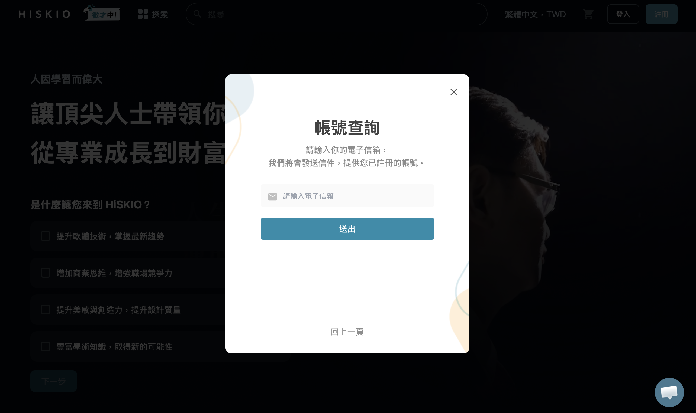
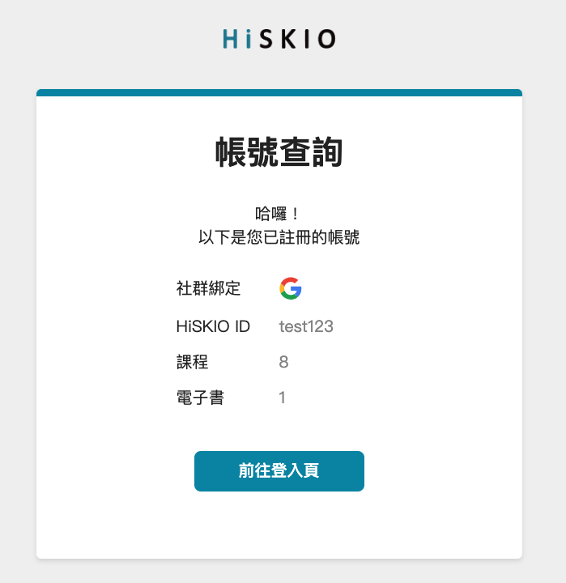
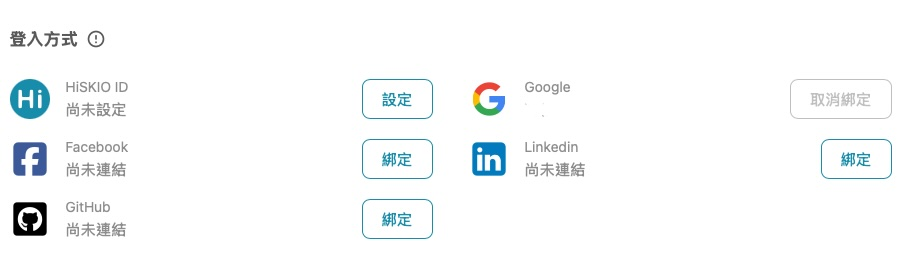

本篇協助你判斷「找不到購買的課程」屬於哪種狀況，並一步步帶你解決。
先確認你遇到的是哪一種情況
情況 | 描述 | 到本篇哪一段 |
|---|---|---|
A | 可以登入，但「我的學習」裡找不到購買的課程 | 跳到「情況 A」 |
B | 根本登入不了（跳錯誤、或被判定為未註冊） | 跳到「情況 B」 |
C | 忘記當初是用哪一種方式註冊 / 有哪些帳號 | 跳到「情況 C：使用帳號查詢功能」 |
情況 A：登入成功但看不到課程
最可能的原因是登入到另一個帳號。
HiSKIO 提供 5 種註冊帳號的方式（HiSKIO ID、Facebook、Google、LinkedIn、GitHub），如果沒有先在【帳戶設定】中綁定，每一種登入方式會各自建立獨立帳號——也就是說，即使你用同一個 Email，從不同登入方式進來會被視為不同帳號。詳細機制請參考 登入方式與社群綁定 的「HiSKIO 的帳號機制」。
常見情境
- 當初用 Facebook 登入購買課程，這次用 Google 登入 → 看不到課程
- 當初用 **HiSKIO ID（Email + 密碼）**註冊購買，這次用社群登入 → 看不到課程
- 用
@gmail.com信箱註冊 HiSKIO ID 後，誤以為可以直接「用 Google 登入」 → 其實是兩個獨立帳號 - 帳戶設定中綁定 Gmail 作為「聯絡用 Email」，誤以為等同於 Google 社群登入 → 兩者並不相同
解決方式
- 先登出目前的帳號
- 換另一種登入方式重新登入（例如原本用 Google，試試改用 Facebook 或 HiSKIO ID）
- 若還是找不到，請參考下方「情況 C」，讓系統幫你列出所有曾經註冊過的帳號
情況 B：根本登入不了
忘記密碼
請使用「忘記密碼」功能重設，詳細流程請參考 密碼管理。
若你當初是用社群帳號（Facebook、Google 等）註冊，無法用忘記密碼找回——因為你本來就沒有設定過 HiSKIO 密碼。請直接用原本的社群帳號登入。
社群登入失敗
例如點擊 Facebook 登入後頁面卡住、跳錯誤訊息，請參考 登入方式與社群綁定 的「社群登入失敗的處理方式」。
出現「您尚未註冊會員」提示
你可能原本是用另一種方式註冊的。請嘗試換一種登入方式，或使用下方「情況 C」確認。
情況 C：使用帳號查詢功能
如果忘記當初是用哪種方式註冊，可以透過帳號查詢功能讓系統列出所有用該 Email 註冊過的帳號。
操作流程
1. 開啟登入視窗、點選「查詢帳號」
在登入視窗中點擊「查詢帳號」，輸入註冊時使用的 Email，按下「送出」。


2. 收取信件
至 Email 收件匣收取「HISKIO 平台」寄出的信件，信件會列出該 Email 底下所有已註冊的帳號，以及每個帳號擁有的課程數量。
依據信件內容選擇對應的社群或 HiSKIO ID 登入，即可看到購買的課程。

若沒收到信件，請檢查「垃圾郵件」或「其他分類」資料夾。
範例說明
案例：使用者 A 初次註冊時用 Google 登入購買課程，之後改用 Facebook 登入，找不到原本的課程。
正解：登出後改用 Google 登入即可看到課程。
預防方式：登入後到【帳戶設定】→【登入方式】將 Facebook 帳號綁定到這個帳戶。綁定後不論用 Google 或 Facebook 登入，皆會導向同一個帳戶，就不會再找不到課程。

預防再次發生
- 固定使用同一種登入方式：購買前記下你用哪種方式登入
- 建議至少設定 2 種登入方式作為備援：登入後至【帳戶設定】→【登入方式】把常用的社群帳號綁上，未來不論用哪種方式登入都會導向同一個帳戶；當主要登入方式臨時出問題時也能用備用方式繼續上課
仍無法解決？
請聯繫客服並提供：
- 購買時使用的 Email
- 訂單編號或發票號碼（如有）
- 嘗試過的登入方式
更新時間： 07/05/2026